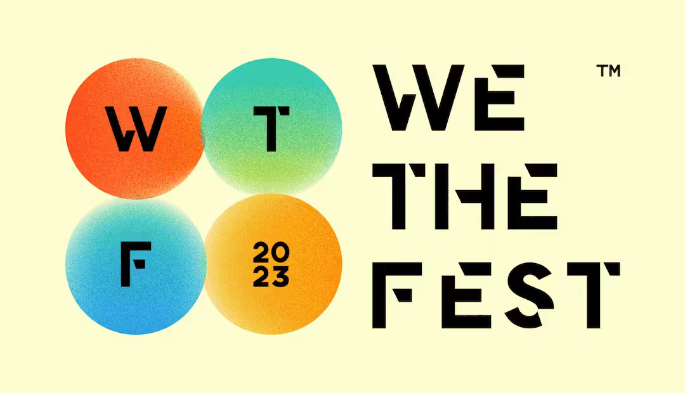
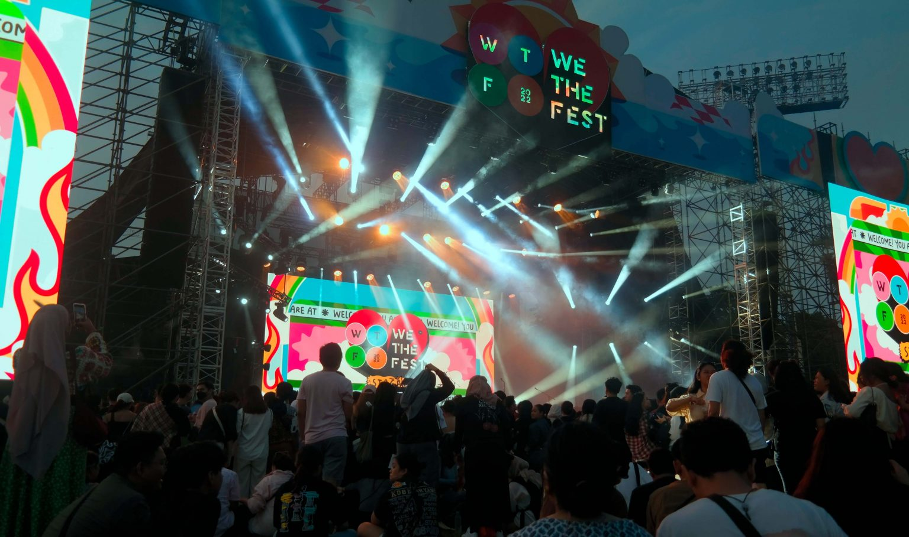
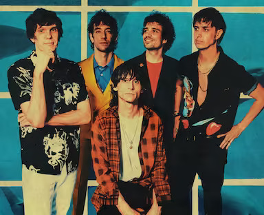
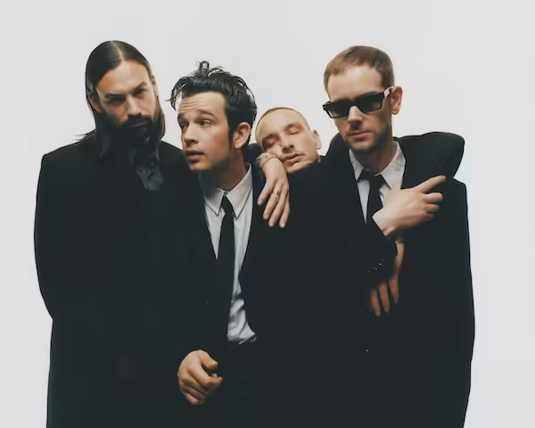
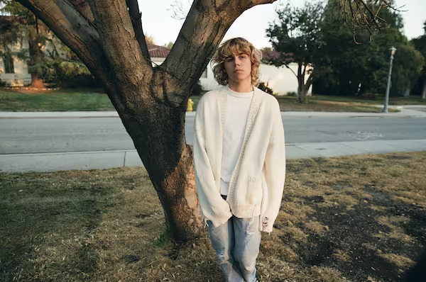

We The Fest ™


We The Fest is an annual summer festival of music, arts, fashion and food taking place in Indonesia’s capital of
Jakarta. Since its inaugural edition in 2014, the festival has seen incredible performances from globally-known acts
of different genres including Lorde, SZA, Dua Lipa, Ellie Goulding, Big Sean, Odesza, The 1975, G-Eazy, Mark Ronson,
Offset, Jackson Wang, Phoenix, Macklemore & Ryan Lewis, CL, The Temper Trap, Purity Ring, Flight Facilities, Jessie
Ware and many more.
We The Fest 2023 Headliner
This year the 8th offline edition of the festival is set to be held on 21, 22 & 23 July 2023 in
GBK Sports Complex, Senayan, Jakarta with more spectacular lineup including The Strokes, The 1975, The Kid Laroi,
Lewis Capaldi and many more.
The Strokes

Influential bands of the early 21st century. Their direct, hooky sound — equally inspired by classic tunesmiths like
Buddy Holly and the brash attitude of fellow New Yorkers the Velvet Underground and Ramones — set trends even as it
looked back on rock history. With their acclaimed 2001 debut, Is This It, the Strokes reinvigorated a rock scene
that had spent years focused on post-grunge and nu-metal. Along with the White Stripes and Yeah Yeah Yeahs, they
helped shape the sound and look of alternative rock in the 2000s, with Kings of Leon, the Killers, and the
Libertines, Franz Ferdinand, and Arctic Monkeys reflecting their impact in the U.S. and the U.K., respectively.
The 1975

After four studio albums, there’s not much territory The 1975 hasn’t covered at this point. Throughout their tenure
as a band, the English rockers have flirted with glossy pop, anarchist punk, gritty garage rock, electro-funk and
country. They’ve used their incisive songwriting to ask existential questions surrounding self-discovery, nihilism,
climate change, mental health, addiction, postmodernism and cybersex. So what’s a band to do when they’ve seemingly
done it all? After 20 years together, The 1975 decided it was time for a return to form—a way to celebrate their
beginnings and showcase their growth. The result is their fifth effort Being Funny in a Foreign Language—perhaps the
band’s most intimate sounding record yet.
The Kid Laroi

The Kid LAROI – the newly eighteen year old rapper/singer born Charlton Howard is proving that for an incoming
generation filled with promising talent, yesterday’s borders aren’t today’s barriers. Born and raised in Sydney
(aside from a short stint in the countryside) to a mother of Aboriginal descent and a French father, LAROI was
raised by his mother and his uncle in a gritty environment. When they weren’t at The Fact Tree, a local youth center
where they played video games and pool, LAROI and his friends were on the streets. LAROI grew up consuming one of
America’s most adored exports, listening to hip-hop and R&B icons like Tupac, Erykah Badu, The Fugees, Lil Wayne and
Kanye West. He’s wanted to make music since he can remember, hoping to claim a spot in music royalty.
And More To Be Announced!